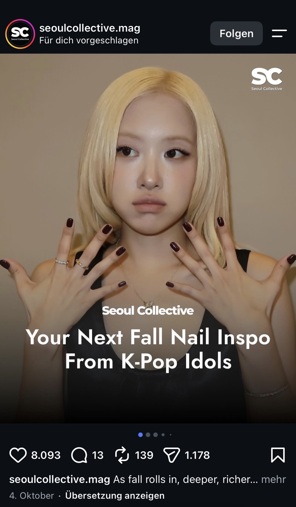
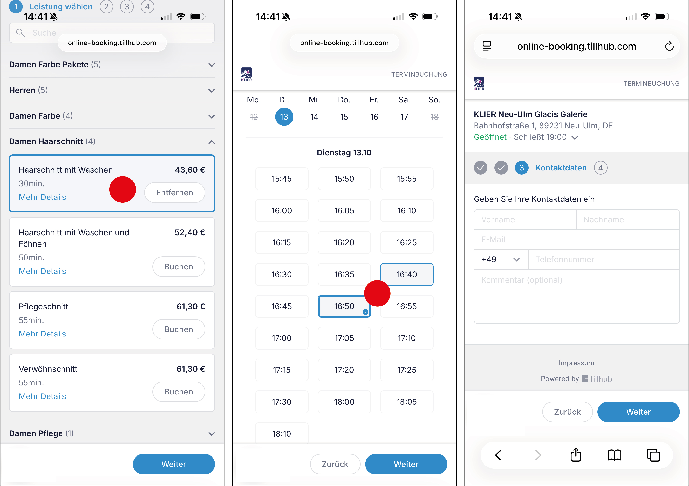

Sara Horvat
Script 1a: Moments I reached for my phone
Meine Beobachtungen
Tag 1
Uhrzeit: 11:30 Uhr in der Pause zum Handy gegriffen, aus Reflex ohne
einen bestimmten Grund
Tag 2
Uhrzeit 20:35 Uhr, beim Serie schauen während nicht so spannenden
Momenten wieder ohne Grund reflexartig zum Handy gegriffen
Tag 3
Uhrzeit: 16:00 Uhr in der Straßenbahn, nachdem meine Freundin
ausgestiegen ist, um Nachrichten zu antworten
Fazit
Mir ist aufgefallen, dass ich besonders häufig zum Handy greife,
wenn ich gerade nichts zu tun habe oder ich auf etwas warte. Das
Handy dient mir dabei nicht immer wirklich einen Zweck, sondern ist
eher eine automatische Reaktion, um gegen meine Langeweile
vorzugehen
Script 1b: App where the effort moved onto me
App: Instagram

1. Welche Arbeit wird auf mich übertragen?
- Instagram zeigt auf dem Haupt-feed immer wieder Beiträge von Personen, denen ich nicht folge, sondern die mir vorgeschlagen werden
- Wenn mich diese nicht interessieren, muss ich sie selbst ausblenden oder als Nicht Interessiert markieren
2. Was könnte Instagram stattdessen machen?
- Instagram könnte standardmäßig nur Beiträge von abonnierten Accounts anzeigen und Empfehlungen in einen seperaten Bereich schieben
3. Warum macht Instagram das nicht?
- Empfehlungen können dafür sorgen, dass Nutzer länger auf der Plattform bleiben und auch mehr Werbung sehen - Eine Trennung könnt deshalb zu weniger Nutzungszeit und daher zu geringeren Werbeeinnahmen führen
Sript 2a: The Blur Test
Blur Test bei Flora incognita
Wahrgenommene Gruppen (Bild 1):
- Orangene Linien des Blumen-Icons durch Gesetz der Ähnlichkeit,
gleiche Farbe und Strichstärke
- Die drei Zeilen des unteren Texts durch gleiche Farbe und Gesetz
der Nähe
- Das Orange von der Blume und das Orange von dem Standort Symbol
Vom Designer wahrscheinlich beabsichtigte Gruppen:
- Blumen-Icon und Überschrift durch Gesetz der Nähe
- Alle weißen Text Elemente, aber vor allem die unteren drei durch
Gesetz der Ähnlichkeit und Nähe
- Karte im Hintergrund soll durch Figur-Grund-Trennung als
Hintergrund wahrgenommen werden
Wahrgenommene Gruppen (Bild 2):
- Grüne Icons / Bilder dadurch, dass alle die gleiche Form und Farbe
haben und auch immer in Reihen eng nebeneinander sind, also druch
Gesetz der Ähnlichkeit und auch Gesetz der Nähe
- Helle weiße text Elemente, die gleichen weiß-ton/wert haben
- Weniger helle weiße text Elemente, die gleichen weiß-ton/wert
haben
- Hier auch wieder helle und farbige Elemente gegenüber dem dunklen
Hintergrund durch Figur-Grund Trennung
Vom Designer wahrscheinlich beabsichtigte Gruppen:
- Kopfbereich als Navigation
- Überschriften mit den Pflanzen Icons / Bildern darunter
- Die einzelnen Kategorien / Überschriften (waren bei dem Blur test
schwer zu unterscheiden von den Pflanzen Unterschriften, da sie die
gleich Größe und den gleichen weiß-ton haben)
Script 2b: Elements that are competing for first notice
Beispiel anhand unserer Lightning Demo "Flora incognita": Elemente,
die um Aufmerksamkeit konkurrieren
Bild 1:
- Großes Blumen Icon, durch größe, helle Kontur und das kräftige
Orange
- Überschrift (Bestimme Deine erste Pflanze), durch große, fette,
weiße Schrfit
- Erklärtext, der auch sehr hell ist
- Orangenes Standort Symbol, durch das auffällige Orange
-> Da die Überschrift als erstes auffallen sollte, würde ich das
Blumen-Icon kleiner und weniger kontrastreich machen. Außerdem würde
ich das Standort-Symbol aus dem Hintergrund grau statt orange
machen, damit es nicht so auffällt. Als letztes würde ich noch den
Erklärtext unter der Unterschrift etwas dunkler machen, damit er
nicht gleich hell ist, wie die Überschrift
Bild 2:
- Große, farbintensive Pflanzen Icons / Bilder
- weiße, fette Kategorienüberschriften
- weiße, fette Bildunterschriften
- Titel (Arten), im obersten Bereich
-> Ich würde die Pflanzenbilder der unteren Kategorien leicht
entsättigen, damit nicht alle gleich hell bzw. prägnant sind.
Außerdem würde ich die Bildunterschriften (Pflanzennamen) weniger
fett / kontrastreich machen, damit sie sich von den Überschriften
besser unterscheiden
Script 3a: Flow where I have to hold something in my head
Beispiel: Frisörtermin digital buchen (Frisör Klier)

Bei einer Online-Terminbuchung muss sich der Nutzer die ausgewählte Dienstleistung, den Preis und die Uhrzeit merken, während er durch die verschiedenen Schritte navigiert. Eine Verbesserung wäre eine dauerhaft sichtbare Buchungsübersicht, die alle wichtigen Infos anzeigt
Script 3b: the main action and what actually happends
App: Spotify, Shuffle Button
Ich gehe davon aus, dass beim drücken des Shuffle-Buttons alle Songs
aus meiner Playlist völlig zufällig abgespielt werden, aber
tatsächlich kann Spotify die Reihenfolge durch seinen
Mischalgorithmus beeinflussen, sodass nicht unbedingt jeder Song mit
gleicher Wahrscheinlichkeit als nächstes kommt. Ich erwarte eine
komplett zufällige Wiedergabe, tatsächlich wird die Reihenfolge aber
durch einen Algorithmus bestimmt
Script 3c: Teaching inside the product
App: Duolingo, Onboarding verbessern
- Lernziel: erst nach der ersten Lektion festlegen, statt direkt am
Anfang
- Benachrichtigungen: auch erst nach der ersten Lektion fragen, ob
der Nutzer täglich erinnert werden will
- Abo-Funktionen: Erst erklären, wenn der Nutzer auch eine
kostenpflichtige Funktion verwenden will
Script 4a: Moments when someone hesitated while using a product
App: Vinted
Ich habe meinem Vater, der die App Vinted noch nie benutzt hat, mein
Handy gegeben und ihn gebeten, nach einem schwarzen Pullover in
Größe M zu suchen. Dabei fiel auf, dass er zunächst nach der
Filterfunktion suchte (Da diese bei Vinted unten statt wie erwartet
oben angezeigt wird). Bei den vielen unterschiedlichen Kategorien
überlegte er kurz, welche Einstellungen er wählen soll. Anschließend
scrollte er mehrmals, um nach den Versandkosten zu suchen und
überprüfte den Zustand des Artikels. Am Ende suchte er noch nach
einer Möglichkeit, den Käufer zu kontaktieren. (Da es in der App
einen Frage stellen Button statt eines nachrichten schreiben buttons
gibt, war er zunächst kurz verwirrt )
Interviewpartner
Julian Schön (11 Jahre alt)
möglicher Mitarbeiter vom botanischen Garten
Mitarbeiter des Botanischen Garten und Eltern mit Kinder beim
Workshop interviewen. Informationen hierzu im
Diary: Week 2
Sophia Bühren
Script 2a: The Blur Test
Unterer Bereich:
- drei Blumen bilden eine Gruppe
- ähnliche Form (similarity)
- nah aneinander (proximity)
-> schließt die Schrift mit ein
- center of attention
Oberer Bereich:
- Bild und dunkler Kasten bilden eine Gruppe
- nah aneinander
- aneinander ausgerichtet
-> enclosed together
Navigationsleiste:
- auf einer Linie ausgerichtete Zeichen
- continuity zueinander
- Abstand und Farbe gleich
Fazit:
Sieht auch sehr geblurt noch gut geordnet und strukturiert aus. Die
Gruppen sind immer noch gut zu erkennen.
Script 2b: Substraction
Screen "Bound finden":
- alles gleich groß
- nichts hebt sich ab
-> everthing competes for attention
Wichtiges Element: Suchfunktion
- ist die Grundfunktion von "Bound finden"
- alles andere kann als Filter genutzt werden um die Suchfunktion zu
unterstützen
Script 3a: Memory-tax audid
Zwei-Faktor-Authentifizierung:
Schritt 1: Benutzername und Passwort eingeben
-> Aus deinem Gedächnis
Schritt 2: Auswählen wohin der Code geschickt wird
(SMS oder Authenticator-App)
Schritt 3: Code eingeben bevor er abläuft
-> Merken: Code und Ablaufzeit während du Apps hin und her
wechselst
Schritt 4: Einloggen abschließen
Interviewpartner
Leon (9 Jahre)
Sabrina (41 Jahre und Mutter von Leon)
Mitarbeiter des Botanischen Garten und Eltern mit Kinder beim
Workshop interviewen. Informationen hierzu im
Diary: Week 2
Sara Sonnenmoser
Script 1a: Moments I reached for my phone
In den letzten 3 Tagen sind mir immer wieder die drei gleichen
Momente aufgefallen, in denen ich mein Handy raushole.
Moment 1
Meistens unterbreche ich tatsächliche Gespräche mit anderen. Nicht
weil ich unhöflich sein möchte, sondern, weil z.B Fragen gestellt
werden, auf die ich keine Antwort habe, oder nach Bildern gefragt
wird.
Moment 2
Oft unterbreche ich einfach nur die Stille. Gerade wenn man auf die
Bahn oder Freunde wartet, wenn man am Morgen auf den Professor
wartet oder in den Pausen. Eigentlich ein guter Grund um nicht
ständig am Handy zu sein, jedoch erscheint es in diesem Moment als
das Interessanteste in seiner Umgebung.
Moment 3
Manchmal unterbreche ich selbst Aufgaben bei der Arbeit. Natürlich
nur am Anfang, wo ich noch alleine bin, um das Cafe aufzumachen. Das
Komische dabei ist, dass diese Unterbrechungen nicht mal wirklich
eine Begründung haben. Selbst wenn ich keine Nachrichten bekommen
habe, schaue ich kurz auf mein Handy um alles zu checken.
Fazit
Der erste Moment ist so gut wie die einzige Unterbrechung mit einer
aktiven "Problemlösung". Die anderen Unterbrechungen passieren dann
oft nur durch Langeweile, was sehr schade ist.
Script 1b: App where the effort moved onto me
text
Script 2a: The Blur Test
Beispiel anhand unsere Lightning Demo "Flora incognita"
Viele Sachen werden automatisch gruppiert. Wir können dadurch Bilder
und Texte zwar noch erahnen, sehen dieser aber nicht mehr einzeln,
sondern als eine große Gruppe. Je größer Dinge abgebildet sind,
desto leichter lassen sie sich erkennen. Eine große Rolle spielt
dabei, woran wir gewohnt sind, was sehen wir häufig und mit welchen
Icons sind wir vertraut. Auch Farben lassen uns schnell Dinge
eingrenzen. Wie auch hier im Beispiel: Egal, wie verschwommen der
Screen ist, es fällt uns leicht zu erkennen, wo sich die Pflanzen
befinden, einfach nur durch die Farbe, die sich außerdem auch vom
Hintergrund abhebt.
Script 2b: Elements that are competing for first notice
Beispiel anhand unsere Lightning Demo "Flora incognita"
text
Beispiel anhand unsere Lightning Demo "Actionbound"
text
Script 3a: Flow where I have to hold something in my head
Eine Sache, die mir und auch anderen direkt in den Sinn kommt sind
Passwörter, Benutzernamen und Codes die man sich merken muss.
Oft lande ich in solchen Situationen, in denen ich mir aus einer SMS
oder einer Mail ein Code merken soll, um meine Identität zu
bestätigen.
Bespiel an Instagram:
Ich möchte mich an meinem PC auf Instagramm anmelden. Dafür suche
ich erstmal im Browser nach der Seite. Wenn ich dann letztendlich im
Login Screen bin, stoße ich schon auf die erste Sache die ich mir
potenziell merken muss:
mein Benutzernamen und mein Passwort. Um
zu bestätigen, dass das auch wirklich ich bin, muss ich einen
Code eingeben
der mir per Mail oder SMS zugeschickt wird. Dies ist der nervigste
Teil, da ich aus dem Tab raus muss um eine andere App zu öffnen und
ich mir zusätzlich den Code noch merken muss.
Heutzutage gibt es aber schon viele Hilfsmittel, die einem das
Merken "abnehmen". Allein die Funktion "Passwort speichern" wird
vielen unglaublich helfen, da sie sich nicht für jedes Login ein
Passwort merken müssen.
Script 3b: the main action and what actually happends
text
Script 4a: Moments when someone hesitated while using a product
Bei dieser Übung habe ich mich für ein Produkt entschieden, welches
ich sehr gut kenne: mein Handy.
Diese Situation ist letzte Woche durch Zufall entstanden, als ein
Android User mein Handy benutzt hat. Die Person hatte grundsätzliche
Probleme mit dem Interface. Dies kann man der Person natürlich nicht
verübeln, da Android und iOS zwei unterschiedliche Bedienungsweisen
haben. Genau deshalb hat mein Gegenüber so oft gezögert, als hätte
sie Angst, etwas kaputt zu machen. Sie zögerte beim Öffnen und
Schließen von Apps und arbeitete langsam. Öfters kamen von ihr
suchende bzw. nach Hilfe fragende Blicke.
Interviewpartner
Manuela (48 Jahre und Mutter von zwei Töchtern)
Meine erste Interviewpartnerin ist meine Mutter, nicht aus
Bequemlichkeit, sondern wegen ihrer Erfahrungen aus der Zeit als ich
klein war. Damals hätte solch eine App ihr vermutlich viele Nerven
gespart, weshalb ich mich gerne mit ihr zusammensetzen möchte, um
herauszufinden, was sie zu erzählen hat.
Mitarbeiter des Botanischen Garten und Eltern mit Kinder beim
Workshop interviewen. Informationen hierzu im
Diary: Week 2